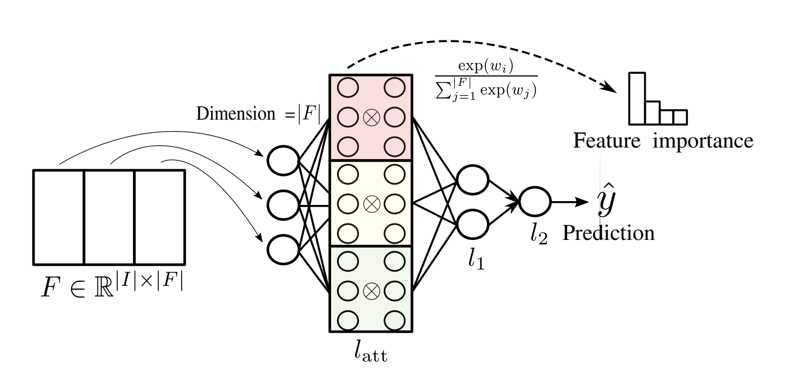

Real Data¶
This section will guide you on running intervene on real data-sets (datasets without a synthetic DAG). The main points covered will be:
The commands required
Pre-processing (Including Imputing Missing Data and Feature Selection)
Adding Constraints to the Structure Learning
Preparing Real Data¶
Real Data Requirements¶
The input data for intervene should should be stored in a .csv file. Each node in the learnt graph will correspond to a column in the file with headers as the names of the nodes.
Intervene is optimised to learn graphs with 20 - 60 nodes. This is the key factor for the duration of a run, however, the this will also depend on how connected the graph is, on the number of data entries and on the level of noise and missing data.
For best performance, the data file should contain over 5000 up to 1,000,000 entries. if your data is incomplete, intervene offers a function to impute missing data.
Intervene takes well to discrete data with the recommended number of categories being between 2 - 4. If your data is continuous or mixed data, intervene offers a binning function.
Binning Continuous Data in Mixed-Type Datasets¶
Intervene is currently optimised to handle data sets with a low number of discreet values. If the dataset you would like to analyse contains columns that have continuous data, it is possiable to use the pre-processing module to bin the data.
Binning can be done using the ‘prepocess’ subcomand within the CLI interface. The basic command is:
intervene preprocess --data data_path --output output_path
With only the path to the data and the output path specified by the user. This command will result in all columns binned into three even catagories using the funcition qcut from the pandas library .
The binning can be further optimised with the following options.
option |
type |
description |
|---|---|---|
n_bins |
int |
The number of catagories to bin to. |
cols_to_bin |
string |
Specify which columns to bin. Example: ‘[col1,col2]’ |
label |
bool |
If activated will display presentage label. Example: 0% - 33%, 33% - 66%, 66% - 100%. |
param_file |
path |
path to a .yaml paramter configuration file that allows maximum flexibility over the binning. |
For example:
intervene preprocess --data data_path --output output_path --n_bins 2 --cols_to_bin [col1,col2] --label True
This command will bin the columns ‘col1’ and ‘col2’ to two categories with labels
Example Configuration File
variables: - name: "col1" bin_type: "cut" bins: [(0, 5), (5, 10)] labels: ["level1", "level2"] - name: "col2" bin_type: "qcut" bins: 3 labels: ["level1", "level2", "level3"]
This confguration will result in the binning of the column ‘col1’ to two bins using the function cut from the pandas library . The first bin will include values from 0 to 5 and will be labeled ‘level1’ and the second bin will include values from 5 to 10 and will be labeled ‘level2’. The lower value isn’t included in the bin. For example, the number 5 will be in ‘level1’. The column ‘col2’ will be binned to three bins using the qcut function and will bare the labels ‘level1’ for the first bin and so forth.
The command to bin the data based on the parameters in the configuration is as following:
intervene preprocess --data data_path --output output_path --param_file path_to_param_file
Imputing Missing Data¶
Intervene can be used to impute missing data from a real or synthetic dataset. There are currently five different methods for handling missing data:
drop |
listwise deletion method removing all entries from partial respondents. The danger with this method is that it could substantially reduce the initial dataset. |
central_tendency |
a single imputation method replacing the missing values with the mode (for categorical data) or median (for continuous data) value. |
hot_deck |
(k nearest neighbours): a single imputation method, based on feature similarity. Fills in missing values with the mode (categorical data) or median (continuous data) value of the 5 closest neighbours. To define the neighbours, either the hamming distance (categorical data) or the euclidean distance (continuous) is used. |
regression |
single imputation method that independently predicts the missing values of each variable based on the values of the other observed variables. A logistic regression model is used for prediction if the data are categorical, linear regression otherwise. When more than one variable in the dataset present missing data an initial imputation is needed before the prediction step, here the central_tendency is used. |
mice |
(Multivariate Imputation by Chained Equations): a multiple imputation method, filling in the missing data multiple times. It performs a regression imputation 5 times, updating the prediction at each step. |
Imputing Missing Data from the CLI¶
On the command line intervene preprocess -h can be used to check the available methods under --imputation-method.
To impute missing data the user will need to specify:
data path to the .csv file of the dataset containing missing data;
output path to the .csv file where the imputed dataset will be written;
imputation-method, one of the 5 methods available in Intervene for imputation.
Now, all we need to do is run the command:
intervene preprocess --data path_to_data.csv --output path_to_output_data.csv --imputation-method method
Example:
intervene preprocess --data ./data_missing.csv --output ./data_imputed.csv --imputation-method central_tendency
In the case you also need to bin the data (see specific section), the imputation step will be computed first.
Feature Selection¶
It is often the case that not all features are useful for predicting variables of interest. Feature selection is the process of eliminating redundant features from the data with the view to decrease the learning time complexity and increase performance. The main motivation for reducing the dimensionality of the data and keeping the number of features as low as possible is to decrease the training time and enhance the performance of machine learning algorithms. Feature selection is inherently multi-objective in nature, with competing objectives of minimizing the number of features and minimizing the prediction error.
The structural learning algorithm of intervene uses markov chain monte-carlo (MCMC) as its engine; MCMC is notoriously computationally intensive but can be made efficient for causal discovery by restricting the search to variable orderings, instead of global structure, the number of possibilities of which is superexponential with respect to the number of variables. Even using this trick, however, the search for the optimal structure has time complexity that is polynomial in the number of variables and so being able to do any kind of feature reduction is greatly beneficial.
Feature Selection in intervene¶
Feature selection in intervene can be accessed via the CLI using the preprocess subcommand. We currently offer two methods: one based on mutual information (MI) and one based on a a neural network with a self-attention mechanism (SAN).
When performing interventional analysis, in order to correctly capture the causal effects, the only set of required variables are those in the active path between the evidence and target variables. An active path between nodes X and Y given nodes E is any path between X and Y such that:
For any v-structure (A → C ← B) on the path, either C or one of its descendents is in E
No other nodes on the path are in E
The goal of this feature selection is therefore to extract only the nodes on the unconditional active paths between the
evidence and target variables. The feature selection is naturally integrated with existing intervention functionality;
specified using a yaml file (see section Performing Interventions), feature selection will attempt to find the
\(k\) nodes (--n-features) on the active path, of specified target and evidence variables, by evaluating
which are most predictive of them. Since feature-selection is
indifferent to whether a variable is nominally a target or an evidence node, we refer to them
collectively as ‘targets’.
The --interventions and --n-features options apply to both of the supported feature selection methods.
It is important to note that --n-features draws only from those features not contained in the set
of target variables.
Since the targets are required for interventions they must always be included in the data and thus do
not contribute to \(k\).
As such the total number of variables in the graph after feature selection will be \(k\) + 1 +
number of evidence nodes, not \(k\).
Mutual-Information Estimation¶
Mutual information (MI) has a straightforward interpretation as the amount of shared information between distributions, More technically, for two random variables, X and Y, the MI is proportional to the ratio between the joint distribution and the product of their marginal distributions. For discrete variables it can be written as
This is strictly non-negative and is equal to zero if and only if the X and Y are completely independent (meaning Y and X tell us nothing about each other), with higher values indicating higher dependency. Thus, MI can be utilised as a measure of features’ relevance and reundancy, having the benefit of not being constrained by linearity between the variables, while also being able to handle continuous and discrete features (with an arbitrary number of categories) alike. For our purposes, the mutual information is computed between the set of all features and each target (the set of which is disjoint from the features) independently and the intersection between the ranked features iteratively computed, with each iteration the subset of each feature ranking is expanded by 1, starting from \(k\), until \(k\) features have been selected.
Feature selection with MI can be performed via the CLI’s preprocess subcommand by setting the value
of the option --fs-method to mi.
intervene preprocess -d data.csv -o new_data.csv --interventions interventions.yml --fs-method mi
Self-Attention Network (SAN)¶
{kind=link}
The neural network architecture that implements an attention mechanism over the input features. Given inputs features \(X \in \mathbb{R}^{N \times F}\), the first layer computes an attention mask with learned weight matrix \(W \in \mathbb{R}^{F \times F}\) and associated bias term \(b \in \mathbb{R}^{F}\) as
where \(h\) denotes the index among the \(H\) attention heads. Simply put, we take \(H\) weight matrices and multiply each of them by the input features, transform the output into a probaility distribution with the softmax operator to yield \(H\) scores which are then averaged over, yielding an attention mask by which we element-wise multiply with the original inputs.
With the network trained to predict the target variables, \(Y \in \mathbb{R}^O\), the weight matrices can be understood to represent the relations between the different features. Post-training, we can obtain a global estimate of each feature’s importance by extracting the diagonal of the weight matrices, applying softmax, and averaging, or an instance-based estimate by computing the attention masks for all samples individually and averaging.
Feature selection with SAN can be performed via the CLI’s preprocess subcommand by setting the value
of the option --fs-method to san.
intervene preprocess -d data.csv -o new_data.csv --interventions interventions.yml --fs-method san
Detailed descriptions of the associated parameters are given in the table below. For a more in-depth explanation of SAN generally, vide Škrlj, Blaž, et al [1].
Parameter |
Description |
–batch-size |
Determines the batch-size used to train the SAN with stochastic gradient descent. The smaller the batch-size the lower the memory consumption and the noisier the estimate of the gradient. |
–epochs |
Number of epochs to train the SAN for. An epoch corresponds to a complete pass through the data and thus \(\lceil{\frac{N}{m}}\rceil\), where \(N\) and \(m\) are the number of samples in the data and the batch size, respectively. |
–hdim |
Number of units in eac of the SAN’s hidden layer. The SAN consists of an initial attention layer which modulates the importance of the input features, followed by a fully-connected hidden and output layer with weight matrices of size \(F \times hdim\) and \(hdim \times O\), respectively (where \(O\) is the total number of (ungrouped) outputs). |
–n-heads |
Number of heads (\(M\)) to use in the SAN’s attention layer. |
–scoring-methods |
The method used to determine importance of each feature, post-training. If ‘global’, feature importance is evaluated determined weight matrices. If ‘instance’, feature importance is determined by computing the average of the attention layer’s outputs over the data samples. |
Running on Real Data¶
Just as for synthetic data, a predefined pipeline for real data can be run using the CLI and and is configurable by a range of command-line options. The command for running the real-pipeline is
intervene real
followed by the desired option and their values. Since for real-data we do not have access to a ground-truth, there is no evaluative aspect as there is for the synthetic pipeline. What the real-pipeline does allow for that its counterpart does not, however, is the performing of interventions which is of course one of the primary motivations for causal-modelling in the first place. Given a graph consisting of variables causal relations, we can predict the result of intervening, according to Pearl’s do-calculus, on a variable or set of variables with respect to some target variable.
In the following sections, we first give a sketch of the make-up of the real-pipeline before diving deeper into those components that require additional explanation to configure, use or interpret.
Components of the Real-Pipeline¶
The main components of the real-pipeline are described below in order of execution. This tables is intended to just serve as an overview and we direct the reader to dedicated sections for more information regarding the particular components.
Components |
Description |
|---|---|
Constraints |
Using prior knowledge we can constrain which edges should or should not be taken place before another, we would want to ensure that the former cannot be a descendent of the latter. This can be enabled by passing a path to a .yml configuration file to the |
Structure learning |
Runs an algorithm (Order MCMC) that attempts to infer the causal structure of a dataset. This is enabled by default but can be disabled with the |
Parameter estimation |
If interventions are to be performed, the learnt structure is converted into a belief network by estimation of the conditional probability tables of each node from the data. |
Interventions |
Performs interventions on a belief network based on a configuration file and computes the odds ratio for each outcome with respect to a reference level. This can be enabled by passing a path to a .yml configuration file to the |
Sensitivity analysis |
Assesses how robust the learnt belief network under the influence of latent confounding. This can be enabled with the |
The current available implementations of each of these is listed below.
The primary structure learning algorithm implemented in intervene is OrderMCMC, using the scoring function qNML. This is the default algorithm which is used across all CLI access points.
The user also has access to:
the BIC score with OrderMCMC
the BIC score with GES
the constraint based algorithm, PC.
These are not currently accessible through the CLI, please refer to the advanced sections for information on how to access these in Python.
There are two parameter estimation techniques available to the user:
Maximum Likelihood Estimation (MLE)
Discriminative Frequency Estimation (DFE)
Currently, only MLE is accessible through the CLI, and is the default.
Adding Constraints¶
Intervene allows the user to inject some pre-existing knowledge, constraints, into the learning of your model. There are currently six different types of constraints that can be enforced either on edges or nodes:
allowed_edges: list of edges that are allowed in the learning process. It defines the edges that could be find in the learn graph and therefor it is used to impose that it is not possible to have parents outside the specified set.
exclude_edges: list of edges to exclude in the learning process. The learn graph will not have these edges.
include_edges: list of edges to enforce in the learning process. The learn graph will have these edges.
ignore_nodes: list of nodes (variables of the given dataset) to ignore in the learning process. The learn graph will not have these variables in the set of nodes.
input_nodes: list of source nodes with in-degree 0, i.e. node with no parents.
output_nodes: list of sink nodes with out-degree 0, i.e. node with no children.
How to Specify Constraints¶
In order to use the constraints in the structure learning algorithm, we need to write a .yml file that describes as many constraints as we need according to the six types introduced above.
Example:
Given the following true graph:

Example true DAG.¶
Let’s assume our pre-existing knowledge is the following:
Nodes GH and MW can have parents only in the set {OY, QS, CD} and node PF can have parents only in the set {OY, QS, CD, GH, MW}.
The edges \(DA \rightarrow QS\), \(OQ \rightarrow QS\), \(DA \rightarrow CD\) and \(OQ \rightarrow CD\) are not present in the graph.
The edges \(DA \rightarrow PH\) and \(OQ \rightarrow PH\) are present in the graph.
We are not interested in learning the relationships involving node AB. N.B. the nodes specified in ignore_nodes do not need to be isolated nodes with in-degree and out-degree 0.
DA and OQ are source nodes.
PF is a sink node.
It can be written as:
---
group_1: &A
- OY
- QS
- CD
group_2: &B
- GH
- MW
group_3: &C
- PF
group_4: &D
- DA
- OQ
group_5: &E
- PH
group_6: &F
- QS
- CD
allowed_edges:
- {from: *A, to: *B}
- {from: [*A, *B], to: *C}
exclude_edges:
- {from: *D, to: *F}
include_edges:
- {from: *D, to: *E}
ignore_nodes:
- AB
input_nodes:
- DA
- OQ
output_nodes:
- PF
Useful syntax:
group_n: &Xis used as an alias to identify a set of nodes used to specify the constraints on the edges.{from: [*A, *B], to: *C}in allowed_edges is used to identify that the nodes in group C can have parents in the set defined by the union of groups A and B.
Here there are two examples of graphs that violate some of the specified constraints:

Example of non-valid DAG according to the node constraints: dashed red edge violates the input_nodes and the solid red line both the output_nodes and ignore_nodes constraints.¶

Example of non-valid DAG according to the edge constraints: dashed red edge violates the exclude_edges, the solid red line the allowed_edges (GH can have parents only in the group A {OY, QS, CD}) and the two red nodes the include_edges constraint (the edge between these two nodes is missing).¶
Constraints from the CLI¶
Once the constraints file has been created, all we need to do is run the command:
intervene real --data path_to_data.csv --output path_to_output --constraints path_to_constraints_file.yml
Example:
intervene real --data ./data.csv --output ./ --constraints ./constraints.yml
Performing Interventions¶
As suggested by the name, the primary purpose of the intervene toolbox is to perform interventions. We can intervene on a treatment variable of interest to set a specified level, with the view of observing the effect on some outcome variable. In this manner we can determine what the effect of this particular intervention is.
Specifically, interventions are presented as odds ratios, the odds of an outcome given treatment, vs the outcome given control.
In order to run an intervention, the user must specify the --intervention flag in the CLI. Here, a path to an
intervention file must be given.
An example command could be:
intervene real --data /my/data/folder --output my/data/output/folder --intervention my/folder/intervention_config.yml
Where we have specified the usage of the real component, and set the intervention flag to my/folder/intervention_config.yml.
To create an intervention yaml, 6 things are necessary:
The outcome variable
The outcome variable’s reference level
A list of the outcome variable’s target levels
- A list of the intervention variables, along with:
A list intervention variable’s targets
The intervention variable’s reference level
The intervention file should then be specified in the following fashion:
target: spontaneous_combustion
outcome_reference_level: not_on_fire
outcome_target_levels: ['on_fire', 'a_little_toasty']
interventions:
- variable: semtex_for_breakfast
reference_level: no
target_levels: ['yes', 'just a bite']
- variable: drank_petrol
reference_level: no
target_levels: ['yes']
Output¶
In order to run the real-pipeline, the user needs to be specify output directory. This can be
done by providing a path (relative or absolute) to the option --output. The directory need not already exist
and any parent directories in its path will be created recursively. This serves as the root output directory
to which the output of the real-pipeline is to be saved.
Since it is convenient for the user to be able to use the same output directory for multiple runs and
for different datasets, each run is uniquely identifiable by a time stamp generated at runtime
within a subdirectory taking the name of the data .csv file (minus .csv).
More concretely, the output directory is structured as
root output directory (user-specified)
|
+-- name of data .csv file (user-specified)
|
+-- timestamp of run
|
+-- output 1
\-- output 2
\-- ...
with a practical example of an output directory produced for --data alarm.csv and
--output my_output_dir (along with various interventions specified on target variable CVP)
given below
{kind=link}
The various outputs of the pipeline are collated in the report.html file.
This contains information about the constraints enforced, plots of the odds ratios
produced by any specified interventions, and a visual representation of the learnt graph.
Checkpoints created following each expansion step of the Order MCMC algorithm can be found
in a subdirectory entitled checkpoints. These checkpoints can be resumed from by supplying
their file path to the --checkpoints option in subsequent runs.
A description of each of the output files is given in the table below.
File |
Description |
|---|---|
convergence_plot_chain.png |
Plot showing the score of the estimated structure at each iteration of Order MCMC. |
learnt_dag.svg |
Plot of the learnt graphical model. |
modelstring.txt |
Contains string specifying the learnt graphical model. |
odds_ratio*.svg |
Plots prefixed with odds_ratio, followed by the name of a variable and two numbers show the odds ratios computed with the aforementioned variable as the target, with the target level indicated by the first number, and the reference level indcated by the second number (see section Performing Interventions for more details). |
odds_ratio_results.csv |
Tabulated results (odds ratios) of the interventions. |
report.html |
HTML file summarising the results of the run. |
Sensitivity Analysis¶
Sensitivity analysis is a technique used to eveluate how much changing one variable will affect another variable. It allows us to estimate the sensitivity of one variable with respect to another.
Typically in Bayesian networks, sensitivity analysis is used to refute estimates: If an estimate is unstable, how can it be trusted?
In intervene, we currently only have one type of sensitivity analysis. This analysis measures how susceptible an estimate is to breaches in the causal sufficiency (or causal Markov) assumption.
In order to measure the sensitivity of an intervention to latent confunders we prefom an ‘experiment’ - we introduce many different latent confounders and examine how they affect the intervention. If any of introduced confounders change the result of the intervention (i.e. flip the odds ratio), the intervention is perceived to be unstable with respect to this confounder.
Running the analysis¶
In order to activate this functionality in intervene, the --measure-sensitivity needs to be set to True.
For example:
intervene real --data /folder/data.csv --interventions folder/interventions.yml --measure-sensitivity True
The sensitivity analysis will be run on any interventions which have been specified in the interventions.yml
Interpreting the results¶
In the example below, we are performing the intervention GH -> VD and trying to determine where having a confounder would be high risk for this particular intervention.
{kind=link}
The analysis produces a plot with colour coded confounders. The confounders all have the prefix H_.
{kind=link}
The confounders scale from Green -> Red, representing low risk -> high risk. In this example, the highest risk node would be H_8. In the case that a high risk confounder had been found, the next step would be to consult an expert to ascertain the likihood of a confounder being in the proposed location.